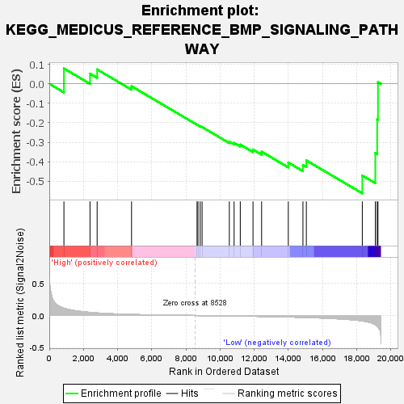
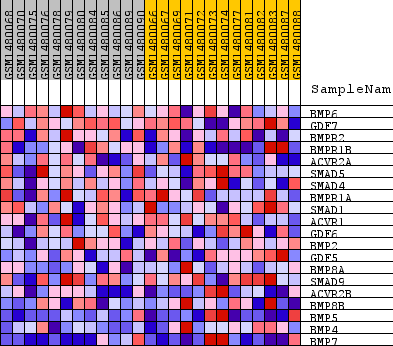
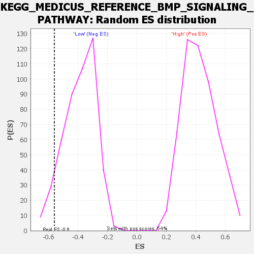

| Dataset | WG6v3.CYGB.cls#High_versus_Low.CYGB.cls#High_versus_Low_repos |
| Phenotype | CYGB.cls#High_versus_Low_repos |
| Upregulated in class | Low |
| GeneSet | KEGG_MEDICUS_REFERENCE_BMP_SIGNALING_PATHWAY |
| Enrichment Score (ES) | -0.5616023 |
| Normalized Enrichment Score (NES) | -1.4459041 |
| Nominal p-value | 0.06236559 |
| FDR q-value | 0.27918142 |
| FWER p-Value | 0.994 |

| SYMBOL | TITLE | RANK IN GENE LIST | RANK METRIC SCORE | RUNNING ES | CORE ENRICHMENT | |
|---|---|---|---|---|---|---|
| 1 | BMP6 | BMP6 | 857 | 0.114 | 0.0786 | No |
| 2 | GDF7 | GDF7 | 2385 | 0.049 | 0.0520 | No |
| 3 | BMPR2 | BMPR2 | 2802 | 0.040 | 0.0735 | No |
| 4 | BMPR1B | BMPR1B | 4817 | 0.017 | -0.0125 | No |
| 5 | ACVR2A | ACVR2A | 8652 | -0.000 | -0.2097 | No |
| 6 | SMAD5 | SMAD5 | 8708 | -0.001 | -0.2120 | No |
| 7 | SMAD4 | SMAD4 | 8838 | -0.001 | -0.2177 | No |
| 8 | BMPR1A | BMPR1A | 8947 | -0.001 | -0.2218 | No |
| 9 | SMAD1 | SMAD1 | 10543 | -0.007 | -0.2968 | No |
| 10 | ACVR1 | ACVR1 | 10823 | -0.008 | -0.3029 | No |
| 11 | GDF6 | GDF6 | 11184 | -0.009 | -0.3117 | No |
| 12 | BMP2 | BMP2 | 11930 | -0.012 | -0.3373 | No |
| 13 | GDF5 | GDF5 | 12434 | -0.014 | -0.3480 | No |
| 14 | BMP8A | BMP8A | 13997 | -0.023 | -0.4038 | No |
| 15 | SMAD9 | SMAD9 | 14854 | -0.030 | -0.4161 | No |
| 16 | ACVR2B | ACVR2B | 15053 | -0.031 | -0.3928 | No |
| 17 | BMP8B | BMP8B | 18330 | -0.085 | -0.4704 | Yes |
| 18 | BMP5 | BMP5 | 19092 | -0.144 | -0.3547 | Yes |
| 19 | BMP4 | BMP4 | 19200 | -0.165 | -0.1833 | Yes |
| 20 | BMP7 | BMP7 | 19248 | -0.181 | 0.0090 | Yes |

